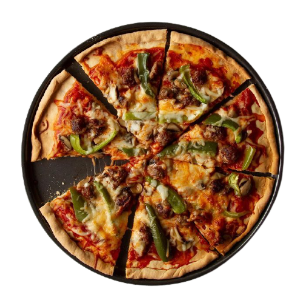

L'ora della Pizza is an italian name which means it's time to Pizza.
We are L'ora della Pizza, and our mission is to make cool pizza which feeds all your senses.
We prefer to rely on instinct and feel, measuring by hand, not by the gram. This is the authentic way to make pizza. Sure it’s a little unrefined, but we’re proud.
It’s pizza like this which feeds your sense of sharing, adding flavour to those occasions when you get together with friends and family. And really, isn’t that what it’s all about? Because when pizza feeds all your senses, it’s not just great, it’s sensational.
The crust is stored in a separate container, on a separate shelf in our fridge. The cheese, marinara sauce and pepperoni are stored in a designated kit, and every pizza is freshly baked on designated parchment paper in our ovens.
Our cheese-only and cheese-and-pepperoni gluten-free pizzas are prepared using the procedures certified by the law, and we take specific caution when making these pizzas.
For those simply looking to reduce gluten in their diets, we offer a Create Your Own pizza option. The cheese, pepperoni and marinara come from our gluten-free kit, but all additional toppings are stored at our standard make table.